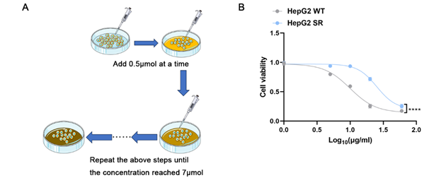
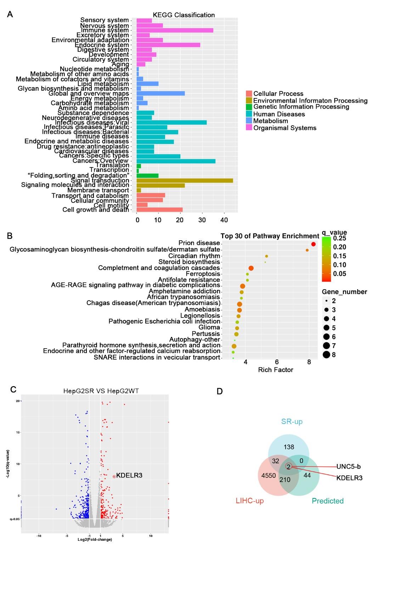
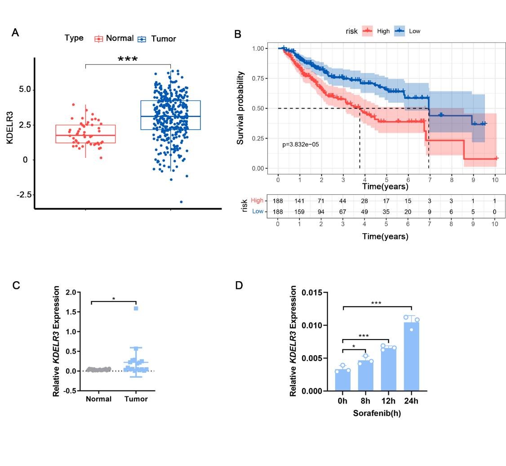
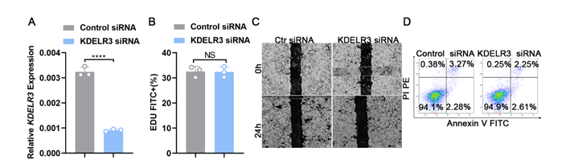
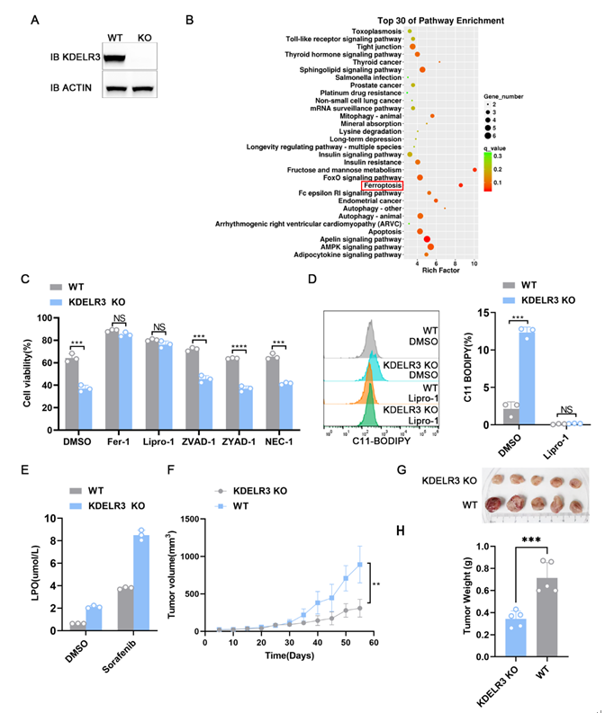

- Correspondence and requests for materials
- should be addressed to Yijie Tao(tyj0205@foxmail.com),
- Shulei Yin(yinsl@immunol.org) or Yizhi Yu(yuyz@immunol.org).

Abstract
In recent years, liver cancer has become the third leading cause of cancer deaths, and the vast majority of liver cancers are hepatocellular carcinoma. Sorafenib is the first-line systemic therapy for the advanced hepatocellular carcinoma. However, numerous patients respond poorly to sorafenib or develop resistance after months of treatment. Therefore, there is an urgent need to explore the underlying mechanism of sorafenib resistance. By constructing HepG2 sorafenib resistant cell line and performing RNA sequencing, our study identified that KDELR3 could promote HCC sorafenib resistance by inhibiting ferroptosis. Therefore, targeting KDELR3 may offer a potential combination strategy to reduce sorafenib resistance in HCC.
Introduction
Liver cancer, as the sixth most common cancer and the third leading cause of cancer-related deaths1, is showing a rapidly increasing trend. Hepatocellular carcinoma (HCC) is one of the most common forms of primary liver cancer. In 2020, the global number of new cases of chronic liver diseases and cirrhosis caused by hepatocellular carcinoma reached as high as 905,700, of which 830,200 resulted in death2. The number of new cases of hepatocellular carcinoma in China reached 466,000, accounting for approximately 50% of the global new cases of hepatocellular carcinoma3,4. Among these, the number of deaths was 444,000, accounting for 45% of the global death tol5. In 2020, the five-year survival rate for new patients with hepatocellular carcinoma in China was only 12.1%, significantly lower than the overall five-year survival rate for cancer in China, which is 40.5%6, indicating the severe challenge of improving the therapy strategy of HCC. For individuals with HCC, systemic therapy becomes preferred treatment because more than 50% cases are discovered at an advanced stage7.
Sorafenib, also known as Nexavar, was initially used to treat advanced renal cell carcinoma that was inoperable. Subsequently, in 2007, it was approved by the FDA for the treatment of inoperable hepatocellular carcinoma, making it one of the approved therapies for hepatocellular carcinoma and one of the most common kinase inhibitors used in the treatment of solid tumors. Sorafenib is a multi-target tyrosine kinase inhibitor (TKI) that inhibit tumor angiogenesis and cell proliferation by targeting vascular endothelial growth factor receptor (VEGFR), platelet derived growth factor (PDGDR) and Ras/Raf/MEK/ERK signaling pathways. In the randomized, double-blind, multi-center, phase III Sorafenib HCC Assessment Randomized Protocol (SHARP) trial, the median survival time for the placebo group was 7.9 months, while for the sorafenib group, it improved to 10.7 months8. However, roughly 30% of patients are able to derive benefits from sorafenib, and typically, this group develops resistance within a span of 6 months9. Therefore, it is urgent to explore the crucial mechanism of sorafenib resistance and explore combined treatment strategies that can improve the efficacy of sorafenib treatment in HCC.
Ferroptosis, a form of programmed cell death driven by iron-dependent lipid peroxidation (PCD), is distinctive in morphological, biochemical, and genetic levels compared to other forms of PCD. It was revealed and named by the Stockwell’s group after the discovery of erastin (a compound exhibiting selectivity for tumor cells bearing oncogenic RAS) and RAS-selective lethal 3 (RSL3, a drug candidate for cancer chemotherapy)10,11. Ferroptosis is characterized by depletion of glutathione (GSH), decrease in the activity of GPX4, and by an increase in ROS generation as consequences of the Fenton reaction12. The dysregulated ferroptosis has been participating in various physiological and pathological processes, which includes cancer cell death, neurotoxicity, neurodegenerative diseases, acute renal failure, drug-induced hepatotoxicity, hepatic and heart ischemia/reperfusion injury, and T-cell immunity13. In addition, sorafenib has demonstrated its ability to enhance ferroptosis primarily by inhibiting system xc- and increasing the intracellular iron levels14,15. Thus it is of significant to study the relationship between sorafenib-resistant and ferroptosis in order to optimize effectiveness of sorafenib.
In our study, we identified KDELR3 as the critical molecule in HCC sorafenib resistance. Mechanistically, KDELR3 expression increased after sorafenib treatment and inhibit lipid peroxidation and ferroptosis induced by sorafenib, thereby promoting HCC resistance. Our research may provide new targets and strategies for HCC systemic therapy.
Results
Establishing Sorafenib-resistant Hepatocellular Carcinoma Cell Line
In order to identify critical modules associated with sorafenib resistance in hepatocellular carcinoma, a sorafenib-resistant HepG2 cell line was first established. The initial dosage for the cells culture was 2.5μM. About Every two weeks, once the cells have acquired the ability to adapt and proliferated normally, the concentration was increased by 0.5μM. Eventually, when the concentration reached 7μM, the hepatocellular carcinoma cells achieved maximum resistance (Figure 1A). CCK-8 assay was used to assessed, and calculated the half-maximal inhibitory concentration (IC50) of the resistant cells and the wild-type (WT) cells, and result showed that the IC50 of the HepG2 SR cells was significantly higher than that of the control cells, indicating the successful construction of the sorafenib-resistant cell line (Figure 1B).

Fig 1. Construction of HepG2 cells sorafenib resistant cell line.
(A) The concentration of sorafenib in the HepG2 cell culture medium was gradually increased from 2.5 μM to 7 μM over 6 months to obtain sorafenib resistant cell line.
(B) CCK8 assay was performed to evaluate the IC50 of WT and SR HepG2 cells. Data are presented as means ± SD from three independent experiments. *P < 0.05, **P < 0.01, ***P < 0.001, ****P < 0.0001.
Identification of KDELR3 as A Key Gene Regulating HCC Sorafenib Resistance
Next, we performed transcriptome sequencing on the HepG2 SR and WT counterparts. We found that the pathways related to cellular processes, specifically cell death and growth, were significantly enriched (Figure 2A). Subsequent KEGG pathway enrichment analysis revealed that differential expressed genes (DEGs) significantly enriched in the ferroptosis pathway (Figure 2B). Then, we intersected the upregulated genes in HepG2 SR, the upregulated genes in hepatocellular carcinoma in the TCGA database, and the genes predicted to be associated with sorafenib resistance based on the transcriptome data of liver cancer patients in the TCGA database (Figure 2D). Finally, KDELR3 was selected for further experiments (Figure 2C).

Fig. 2 Screening the key genes regulating sorafenib resistance.
(A) Kyoto Encyclopedia of Genes and Genomes (KEGG) analysis of differentially expressed genes between WT and SR HepG2 cells.
(B) KEGG pathway enrichment analysis with differential expression genes in WT and SR HepG2 cells.
(C) Volcano plot of global gene expression in HepG2 SR cells versus control cells. Upregulated genes are labeled as red dots, whereas downregulated genes are labeled in blue.
(D) Venn diagram of overlapping genes between LIHC-UP cohort, predicted sorafenib-associated genes cohort and RNA-sequencing.
The TCGA database shows that the expression of KDELR3 is significantly increased in hepatocellular carcinoma, and its high expression is associated with poor prognosis (Figures 3A and 3B). Further examination of the expression of KDELR3 in hepatocellular carcinoma samples and adjacent tissues revealed that its expression is indeed significantly increased in tumor tissues (Figures 3C). Moreover, with the extension of sorafenib stimulation time, the expression of KDELR3 gradually increased (Figure 3D). The above analysis and experimental results indicate that KDELR3 can be induced by sorafenib to increase its expression and promote sorafenib resistance.

Fig. 3 KDELR3 was identified as a key gene regulating sorafenib resistance.
(A) Analysis of KDELR3 expression in cancer tissues and normal tissues of patients with HCC based on TCGA database (***P＜0.001).
(B) Correlation analysis between KDELR3 expression level and overall survival time in patients with hepatocellular carcinoma (P= 3.832e-05).
(C) KDELR3 mRNA expression in hepatocellular carcinoma and normal tissues detected by qRT-PCR.
(D) KDELR3 mRNA expression in HepG2 cells treated with sorafenib (5 ng/ml) for indicated hours detected by qRT-PCR. Data are presented as means ± SD from three independent experiments. *P < 0.05, **P < 0.01, ***P < 0.001, ****P < 0.0001.
KDELR3 Does Not Affect Cell Death, Proliferation, and Migration
To explore the mechanism by which KDELR3 functions, we first used siRNA to knock KDELR3 down in HepG2 cells, and efficiency of KDELR3 knocking down was verified by quantitative PCR experiments (Figures 4A and 4B). Subsequently, flow cytometry experiments showed that knocking KDELR3 down does not affect cell death and proliferation under normal culture conditions, and scratch assays suggested that KDELR3 does not affect the migration of hepatocellular carcinoma cells (Figures 4C and 4D). These experiments demonstrate that knocking KDELR3 down does not affect cell death, proliferation, and migration.

Fig. 4 KDELR3 does not affect the basic biological behaviors of tumor cells.
(A) KDELR3 mRNA expression in HepG2 cells transfected with KDELR3 siRNA or control siRNA detected by qRT-PCR.
(B) Quantitative data showing the proliferation of HepG2 cells transfected with KDELR3 knockdown or not. (C) Scratch healing rate of HepG2 cells with KDELR3 knockdown or not.
(D) Cell death of HepG2 cell with KDELR3 knockdown or not detected by flow cytometry. Data are presented as means ± SD from three independent experiments. *P < 0.05, **P < 0.01, ***P < 0.001, ****P < 0.0001.
KDELR3 Promotes Resistance by Inhibiting the Ferroptosis Induced by Sorafenib
To explore the underlying mechanisms, we constructed the stable HepG2 KDELR3 knockout cell line by CRISPR/Cas9 technology, which was confirmed by Western blot experiments (Figure 5A). Subsequently, transcriptome sequencing and KEGG pathway enrichment analysis were performed on the wild-type (WT) and KDELR3 knockout (KO) cells, and the DEGs were significantly enriched in ferroptosis pathway (Figure 5B). The above analysis indicating that KDELR3 may promotes resistance by regulating ferroptosis pathway.
To validate the sequencing results, we pre-treated cells with different programmed cell death (PCD) inhibitors, including the apoptosis inhibitor Z-VAD FMK (ZVAD-1), the necroptosis inhibitor Necrostatin (Nec-1), the pyroptosis inhibitor Z-YVAD FMK (ZYAD-1) and the ferroptosis inhibitors Ferrostatin (Fer-1) and Liproxstatin-1 (Lipro-1), followed by sorafenib treatment and cell death detection (Figure 5C). CCK8 results showed that ferroptosis inhibitors significantly reduced sorafenib-induced cell death, indicating that the main type of programmed cell death caused by sorafenib is ferroptosis. Moreover, pre-treatment with two types of ferroptosis inhibitors could completely restore the cell vitality of KDELR3 KO cells after sorafenib stimulation (compared to the control group DMSO), suggesting that KDELR3 mainly promotes sorafenib resistance in hepatocellular carcinoma cells by inhibiting ferroptosis.
Lipid peroxidation is a hallmark of ferroptosis. BODIPY™ 581/591 C11 fluorescent dye was used to detect the lipid peroxidation of cell membrane firstly, and the flow cytometry results showed that the lipid peroxidation in the KO group was significantly higher than that in the control group (DMSO) after sorafenib treatment (Figure 5D). At the same time, pretreated with the Lipro-1could fully inhibit the increased lipid peroxidation in the KO group. Consistently, the total lipid peroxidation in KO cells was significantly higher than in control cells after sorafenib treatment (Figure 5E). All these results indicate that KDELR3 promotes resistance by inhibiting sorafenib-induced lipid peroxidation and ferroptosis.
To further verify the in vivo effect, we subcutaneously inoculated nude mice with WT and KO cells. When the tumor grew to 200mm3, mice were given sorafenib by oral gavage (once every two days) and monitored tumor size every 5 days. Before sorafenib treatment, there was no difference in tumor growth between the two groups (Figure 5F). However, the growth trend of KDELR3 KO tumors significantly slowed down, and the tumor size and weight were significantly smaller than the control group after sorafenib therapy (Figures 5G and 5H). Therefore, KDELR3 deficient tumors are more sensitive to sorafenib.

Fig. 5 KDELR3 promotes sorafenib resistance by inhibiting ferroptosis.
(A) Western blotting validation of KDELR3 knockout in HepG2 cells.
(B) KEGG pathway enrichment analysis of differential expression genes in WT and KDELR3 KO HepG2 cells. (C) CCK8 assay was performed to evaluate the viability of WT and KDELR3 KO HepG2 cells pretreated with indicated cell death inhibitors and stimulated with sorafenib (***P＜0.001, ****P＜0.0001 ) .
(D) Lipid peroxidation of WT and KDELR3 KO HepG2 cells detected by flow cytometry.
(E) Detection of LPO in WT and KDELR3 KO HepG2 cells treated with sorafenib or not. F-H Tumor growth curves.
(F) Tumor growth curves were made for nude mice inoculated with 1×107 WT or KDELR3 KO HepG2 cells, and tumor growth was monitored with calipers every 5 days (**P＜0.01).
(G-H) Tumor volumes and weights were measured at indicated times. Data are presented as means ± SD from three independent experiments. *P < 0.05, **P < 0.01, ***P < 0.001, ****P < 0.0001.
Combined Use of LNP-KDELR3 Enhances the Efficacy of Sorafenib
The above experiments suggest that KDELLR3 may be a new intervention target to reduce sorafenib resistance. Lipid nanoparticles (LNPs) are excellent non-viral drug delivery materials. We used LNPs to encapsulate KDELR3 siRNA(LNP-KDELR3) (Figure 6A) and tested the encapsulation (Figure 6B) and interference efficiency. The results showed that LNP-KDELR3 significantly knocked KDELR3 down in hepatocellular carcinoma cells (Figure 6C).
After pre-treating cells with LNP-KDELR3, we then applied sorafenib stimulation. Compared to the control group, the cell viability in the LNP-KDELR3 group significantly decreased (Figure 6D). This result suggests that LNP-KDELR3 can effectively reduce KDELR3 expression and enhance cell sensitivity to sorafenib, providing a new approach and target for the treatment of hepatocellular carcinoma with sorafenib, and may have certain clinical value.
Fig. 6 LNP-KDELR3 promotes the efficacy of sorafenib.
(A) Schematic diagram of LNP.
(B) Encapsulation rate and size of LNP.
(C) KDELR3 mRNA expression in HepG2 cells treated with LNP-KDELR3 or not.
(D) CCK8 assay was performed to evaluate the viability of HepG2 cells treated with LNP-KDELR3 or not. Data are presented as means ± SD from three independent experiments. *P < 0.05, **P < 0.01, ***P < 0.001, ****P < 0.0001.
Discussion
Through the construction of sorafenib resistant cell line and performing RNA sequencing, we determined that KDELR3 can promote HCC sorafenib resistance by inhibiting ferroptosis induced by sorafenib.
KDELR3 is an endoplasmic reticulum protein which has been reported to be involved in antitumor immunity16, type 2 diabetes(T2D)17 and other physiological and pathological processes. However, the reason for the increased expression of KDELR3 in HCC remains unknown, which is worthy of further investigation. As a solid tumor, HCC is characterized by internal ischemia and hypoxia18. Therefore, the majority of cancer cells undergo anaerobic respiration, leading to the excessive accumulation of lactic acid19. In addition, studies have shown that even when tumor cells are in an oxygen-rich environment, they still produce lactic acid through anaerobic metabolism，which is known as the Warburg Effect20. In 2022, it is reported that lactate accumulated in tumor microenvironment potently induced METTL3 upregulation in tumor-infiltrating myeloid cells via H3K18 lactylation21. Therefore, we speculate that higher KDELR3 in HCC may resulted from lactic acid. At the same time, most of primary hepatocellular carcinomas are caused by chronic inflammation22, which may also lead to the increase of KDELR3 expression. These specific mechanisms remain to be explored in the further experiments.
In addition to the tumor microenvironment, sorafenib may also be an inducer of elevated KDELR3 expression in cancer cells. Sorafenib exerts strong antitumor and antiangiogenic effects, not only directly inhibiting tumor cell proliferation by blocking the cell signaling pathway mediated by Raf/MEK/ERK but also indirectly inhibiting tumor cell growth by blocking tumor angiogenesis23. These processes may make a difference to the KDELR3 expression.
Moreover, it is still sealed that why KDELR3 can inhibit ferroptosis. Ferroptosis was described as a form of programmed cell death that occurs as a consequence of lethal lipid peroxidation dependent on iron in 201224. It is characterized by the accumulation of iron ions and lipid peroxidation, having become a focus of research in recent years. However, more details about ferroptosis remain unknown, which will probably give us clues as to the connection between KDELR3 and ferroptosis. For example, endoplasmic reticulum membrane protein complex subunit 2 (EMC2)25, ACSL4 (long-chain-fatty-acid--CoA ligase 4)26 and SQS (squalene synthase)27 are involved in ferroptosis, which are localized to the endoplasmic reticulum like KDELR3. These molecules may interact directly or indirectly with KDELR3, resulting in the ferroptosis suppression. On the other hand, it is reported that endoplasmic reticulum (ER) stress-mediated autophagy activation is involved in the ferroptosis28, so KDLER3 probably can regulate ER stress to inhibit ferroptosis.
In summary, this study discovered that KDELR3 can enhance HCC sorafenib resistance by inhibiting the ferroptosis pathway for the first time, and providing a new target and a new idea for the clinical treatment of liver cancer. However, there are still many unsolved mysteries to be further explored in the near future.
1. Sung H, Ferlay J, Siegel RL, et al. Global Cancer Statistics 2020: GLOBOCAN Estimates of Incidence and Mortality Worldwide for 36 Cancers in 185 Countries. CA Cancer J Clin 2021, 71(3), 209-249.
2. Rumgay H, Arnold M, Ferlay J, et al. Global burden of primary liver cancer in 2020 and predictions to 2040. J Hepatol 2022, 77(6), 1598-1606.
3. Ma J, Wang X, Song ZF, Qiao L, Zhao YQ. Comparison of AASLD, EASL & JSH guidelines and Chinese criteria for diagnosis and treatment of hepatocellular carcinoma. J Cancer Control Treat 2019, 32, 1031–8.
4. Sayiner M, Golabi P, Younossi ZM. Disease Burden of Hepatocellular Carcinoma: A Global Perspective. Dig Dis Sci 2019, 64(4), 910-917.
5. Zou H, Li M, Lei Q, Luo Z, Xue Y, Yao D, Lai Y, Ung COL, Hu H. Economic Burden and Quality of Life of Hepatocellular Carcinoma in Greater China: A Systematic Review. Front Public Health 2022, 10, 801981.
6. Chinese Anti-Cancer Association Liver Cancer Professional Committee. Chinese Cancer Integrated Diagnosis and Treatment Guidelines (CACA) - Liver Cancer Section. Journal of Comprehensive Cancer Therapy 2022, 8(3), 31-63.
7. Leowattana W, Leowattana T, Leowattana P. Systemic treatment for unresectable hepatocellular carcinoma. World J Gastroenterol 2023, 29(10), 1551-1568.
8. Dixon SJ, Patel DN, Welsch M, Skouta R, Lee ED, Hayano M, Thomas AG, Gleason CE, Tatonetti NP, Slusher BS, Stockwell BR. Pharmacological inhibition of cystine-glutamate exchange induces endoplasmic reticulum stress and ferroptosis. Elife 2014, 3, e02523.
9. Guo, L., Hu, C., Yao, M. & Han, G. Mechanism of sorafenib resistance associated with ferroptosis in HCC. Front. Pharmacol 2023, 14, 1207496.
10. Dolma S, Lessnick SL, Hahn WC, Stockwell BR. Identification of genotype-selective antitumor agents using synthetic lethal chemical screening in engineered human tumor cells. Cancer Cell 2003, 3(3), 285-296.
11. Yang WS, Stockwell BR. Synthetic lethal screening identifies compounds activating iron-dependent, nonapoptotic cell death in oncogenic-RAS-harboring cancer cells. Chem Biol 2008, 15(3), 234-245.
12. Stockwell BR, Friedmann Angeli JP, Bayir H, et al. Ferroptosis: A Regulated Cell Death Nexus Linking Metabolism, Redox Biology, and Disease. Cell 2017, 171(2), 273-285.
13. Xie Y, Hou W, Song X, et al. Ferroptosis: process and function. Cell Death Differ 2016, 23(3), 369-379.
14. Llovet, J. M. et al. Sorafenib in Advanced Hepatocellular Carcinoma. N. Engl. J. Med. 359 2008, 378–390.
15. Guo L, Hu C, Yao M, Han G. Mechanism of sorafenib resistance associated with ferroptosis in HCC. Front Pharmacol 2023, 14, 1207496.
16. Zhang, J., Zhang, J., Guan, J., Yu, L., Yan, S. KDELR3 Is a Prognostic Biomarker Related to the Immune Infiltration and Chemoresistance of Anticancer Drugs in Uveal Melanoma. Dis Markers 2022, 1930185.
17. Altenhofen, D., Khuong, J. M., Kuhn, T., Lebek, S., Görigk, S., Kaiser, K., Binsch, C., Griess, K., Knebel, B., Belgardt, B. F., Cames, S., Eickelschulte, S., Stermann, T., Rasche, A., Herwig, R., Weiss, J., Vogel, H., Schürmann, A., Chadt, A., Al-Hasani, H. E96V Mutation in the Kdelr3 Gene Is Associated with Type 2 Diabetes Susceptibility in Obese NZO Mice. Int J Mol Sci 2023, 24 (1).
18. Wilson, W. R.; Hay, M. P., Targeting hypoxia in cancer therapy. Nat Rev Cancer 2011, 11 (6), 393-410.
19. McKeown, S. R., Defining normoxia, physoxia and hypoxia in tumours-implications for treatment response. Br J Radiol 2014, 87 (1035), 20130676.
20. Vaupel, P., Multhoff, G. Revisiting the Warburg effect: historical dogma versus current understanding. J Physiol 2021, 599 (6), 1745-1757.
21. Xiong, J., He, J., Zhu, J., Pan, J., Liao, W., Ye, H., Wang, H., Song, Y., Du, Y., Cui, B., Xue, M., Zheng, W., Kong, X., Jiang, K., Ding, K., Lai, L., Wang, Q. Lactylation-driven METTL3-mediated RNA m(6)A modification promotes immunosuppression of tumor-infiltrating myeloid cells. Mol Cell 2022, 82 (9), 1660-1677.e10.
22. Singh, N., Baby, D., Rajguru, J. P., Patil, P. B., Thakkannavar, S. S., Pujari, V. B. Inflammation and cancer. Ann Afr Med 2019, 18 (3), 121-126.
23. Pang, R.; Poon, R. T., Angiogenesis and antiangiogenic therapy in hepatocellular carcinoma. Cancer Lett 2006, 242 (2), 151-67.
24. Dixon, S. J., Lemberg, K. M., Lamprecht, M. R., Skouta, R., Zaitsev, E. M., Gleason, C. E., Patel, D. N., Bauer, A. J., Cantley, A. M., Yang, W. S., Morrison, B., 3rd, Stockwell, B. R. Ferroptosis: an iron-dependent form of nonapoptotic cell death. Cell 2012, 149 (5), 1060-72.
25. Wang, D., Wei, G., Ma, J., Cheng, S., Jia, L., Song, X., Zhang, M., Ju, M., Wang, L., Zhao, L., Xin, S. Identification of the prognostic value of ferroptosis-related gene signature in breast cancer patients. BMC Cancer 2021, 21 (1), 645.
26. Doll, S., Proneth, B., Tyurina, Y. Y., Panzilius, E., Kobayashi, S., Ingold, I., Irmler, M., Beckers, J., Aichler, M., Walch, A., Prokisch, H., Trümbach, D., Mao, G., Qu, F., Bayir, H., Füllekrug, J., Scheel, C. H., Wurst, W., Schick, J. A., Kagan, V. E., Angeli, J. P., Conrad, M. ACSL4 dictates ferroptosis sensitivity by shaping cellular lipid composition. Nat Chem Biol 2017, 13 (1), 91-98.
27. Picón, D. F., Skouta, R. Unveiling the Therapeutic Potential of Squalene Synthase: Deciphering Its Biochemical Mechanism, Disease Implications, and Intriguing Ties to Ferroptosis. Cancers (Basel) 2023, 15 (14).
28. Zhao, C., Yu, D., He, Z., Bao, L., Feng, L., Chen, L., Liu, Z., Hu, X., Zhang, N., Wang, T., Fu, Y. Endoplasmic reticulum stress-mediated autophagy activation is involved in cadmium-induced ferroptosis of renal tubular epithelial cells. Free Radic Biol Med 2021, 175, 236-248.